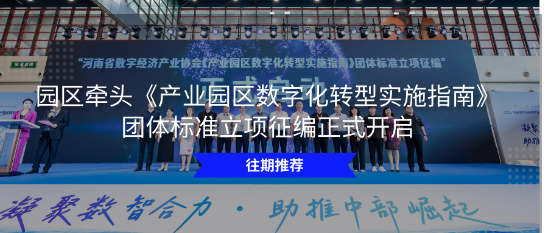
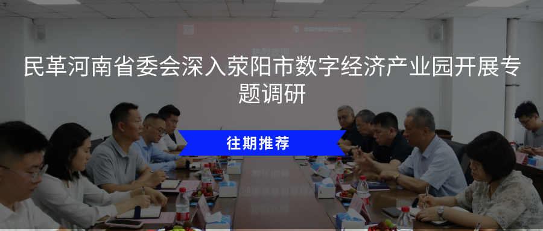

2026 年 3 月 24 日，河南新商景信息咨询服务有限公司与荥阳市数字经济产业园举行线上合作洽谈会，双方围绕短视频精准投流、AI 模型内容展示、产业资源对接、信息化服务落地等领域深入交流，共商协同发展路径。
河南新商景信息咨询服务有限公司商务经理臧爽、荥阳市数字经济产业园招商经理韩姗出席洽谈会。双方就业务契合方向、合作落地模式、服务配套保障等议题充分沟通，交换发展思路与合作诉求，明确后续对接重点，为推进务实合作奠定坚实基础。
河南新商景信息咨询服务有限公司专注新媒体数字化服务，聚焦短视频投流运营、AI 模型内容展示、产业资源对接与信息化服务，深耕内容流量运营与 AI 技术应用场景，具备成熟的投放策略、内容优化、数据复盘及企业数字化服务能力，致力于以精准流量运营与智能内容技术，助力企业品牌传播、获客转化与数字化升级，在本地新媒体服务领域形成专业优势与良好口碑。
荥阳市数字经济产业园韩姗全面介绍了园区发展现状、产业布局、服务体系及企业需求，重点阐述了园区在信息化服务配套、企业资源对接、数字化生态完善等方面的规划，目前，园区正全力推进数字化、智能化升级，通过整合资源、搭建平台，为企业提供全方位的服务与支持，助力企业在数字经济浪潮中实现高质量发展。
此次洽谈进一步加深双方互信与了解，拓宽合作空间。未来，荥阳市数字经济产业园将持续深化与优质企业合作，以信息化服务为支撑、以资源对接为抓手，不断提升园区服务能级，助力区域数字经济高质量发展。
编辑：王明慧
责编：周政




